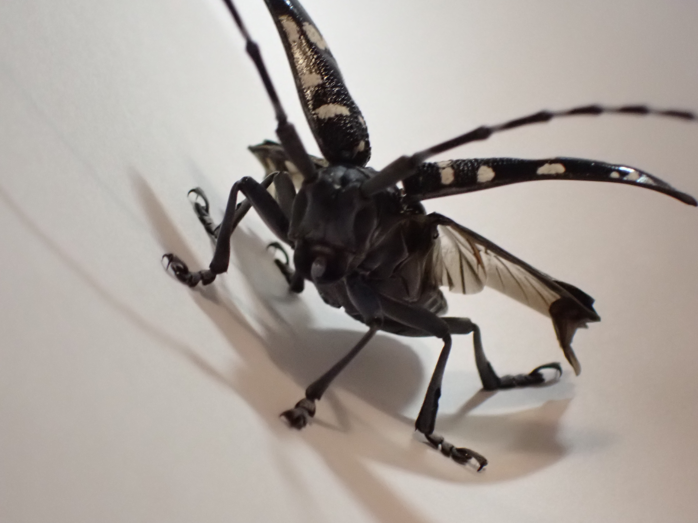
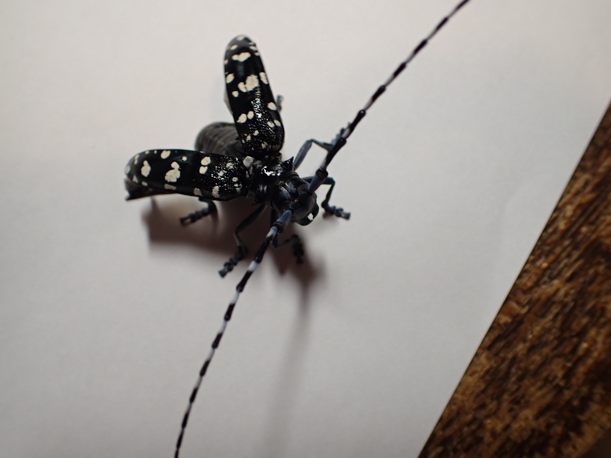

カミキリムシ科
Written on
2020年06月16日
ゴマダラカミキリ
Anoplophora malasiaca
コウチュウ目 カミキリムシ科 ゴマダラカミキリ属
完全変態
分布：日本全土
時期：６-８月
大きさ：25-35mm
食性：樹木の生木、若枝、葉
産卵：6-10月 最盛期は6-7月
孵化：約1週間後に孵化し、木の中に入る
幼虫：１-2年かけて成虫になる
幼虫の食性：生木を食べる
羽化：5-8月
飼育について：飼育はとても簡単である。昆虫ゼリーでも代用できる。ただあまり食べない。隠れるための登り木を置いてあげておく。
果樹や街路樹に利用される木も食べるので、もっとも良く見かけるカミキリムシであり、害虫でもある。幼虫も成虫も樹木を枯らせてしまうので被害が大きい。
【どこからともなく飛んできてガラス窓に当たって落ちた。数時間後、近くでもう１匹。夏の到来を感じるけど、こんなに見つかると被害のほうが気にかかる。
手でつまむと「キュー、キュー」と鳴く。見た目と人間に及ぼす害に似合わず弱々しい。つい逃がしてしまいたくなる。
飛翔はじめが不安定なのか、翅を広げた瞬間に手を触れるだけで飛べなくなる。こんな飛翔力で遠くから飛んでくるのか？飛び上がりがうまく行けば問題ないのかな？】

